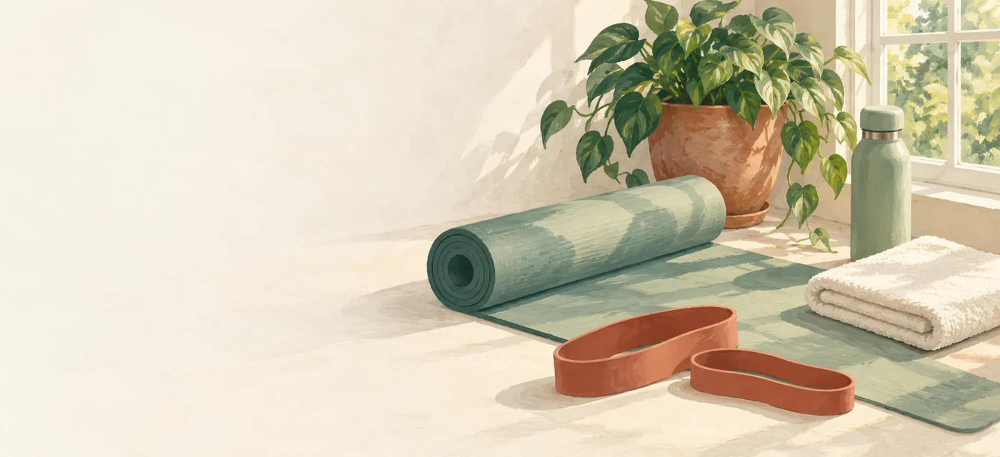

MOVIMIENTO PARA TU DÍA A DÍA
Tu espacio.
Tu fuerza.
Entrena en casa, a tu ritmo.
Peso corporal y bandas elásticasElegir mi sesión ↓
10sesiones distintas
05 + 05globales y específicas
0 / 10completadas
Entrena en casa, a tu ritmo.
Peso corporal y bandas elásticasElegir mi sesión ↓